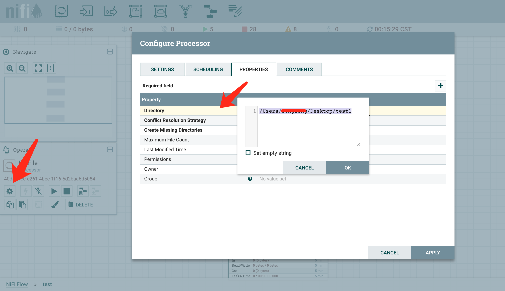

Apache Nifi 定义和开发流式数据处理应用
什么是Apache Nifi
Apache Nifi 是一个定义流数据处理作业的平台服务，它提供直观的界面供开发者进行业务逻辑定制，能够方便地使用原生组件（Processor）也可以自己开发组件来构建流式数据处理应用。
在使用过Apache Nifi 进行一些简单业务逻辑处理之后发现它功能强大，且入手难度不是很高，因此这里解释一下我对它里面的一些内容的理解。有些是翻译官网上的，有一些是我自己总结的内容。
Apache Nifi 使用及简单实例
首先，通过安装并以一个简单的实例来介绍一下Nifi的使用。
安装
nifi下载页面提供zip和tarball下载，下载后解压，在配置好java环境(Java 8 以上)后可以直接通过进入bin目录运行./nifi.sh start即可。
对于安装了Homebrew的macOS用户可以直接通过brew install nifi进行安装
运行时日志打印在logs目录下，一般我喜欢
./nifi.sh start && tail -f logs/nifi-app.log直接看启动信息
启动界面
（待补充）
简单实例运行
Nifi为了增加复用性，有一个模板的概念，即构建完成的应用或者部分模块能够导出为模板文件（xml描述文件）之后可以通过导入直接生成一个可以运行的应用。这个链接里面有几个例子，可以下载后导入到项目中使用。
比如simple-httpget-route.template.xml这个模板：
配置好putFile的Directory属性以及，把Automatically Terminate Relationships的Success和Failure都设置中断后，即可点击运行按钮启动这个应用。

这个应用处理的逻辑是：
- 获取localhost:8080/nifi页面内容,并以 temp.txt的名字发给ExtractText这个处理器
- 抽取
<title></title>内文字 - 检查是不是
Nifi - 如果是的话，将该文件temp.txt存到目标地址
基本概念介绍
在Nifi里面有几个基本的概念需要介绍一下：
- FlowFile：它是在处理器（Processor)之间流转的对象，伴随它的还有一组key/value表示的属性（attributes)
- FlowFile Processor: 处理器，它是实际处理业务的逻辑单元。通过将FlowFile内容及其属性进行一定操作后，交由后续处理器处理。
- Connection: 它表示Processor之间的顺序关系，也是FlowFile的内容流向，它的内部实现是基于Java的队列,
- FlowFile Controller, 它充当调度器的作用。
- Process Group: 在Nifi中，一个Process Group是一个具体业务的组，它内部是一系列Processor组成的具体处理逻辑的应用。它可以通过Input port 和output port 来指定输入和输出。通过它的分离，每个Process Group处理不同业务逻辑，能够减少耦合，使逻辑更清楚。
架构（这部分没深入了解）

整个架构如上图所示，整个项目是跑在JVM上的，
Web Server即默认在http://localhost:8080/nifi提供的界面，以及http://localhost:8080/nifi-api/resources下提供的一系列接口。它基于Jetty，前端由JQuery等插件实现。
Flow Controller, 提供管理和调度资源的功能（感觉它是个调度器）
FlowFile/Content/Provenance Repository 这些是为了保证Failover机制而作的一些Write ahead 日志，详细介绍在这里，它主要介绍了这个write-ahead log的实现细节和算法，包括如何写、校验、回滚write-ahead log
后面更新的内容
- Processor的实现细节
- 如何动手写一个Processor
- Cluster的搭建（我还没做过，目前都是单机的）